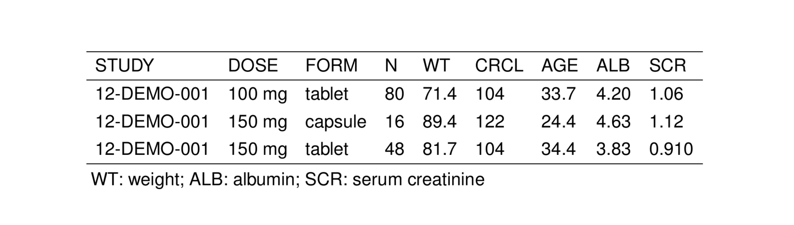
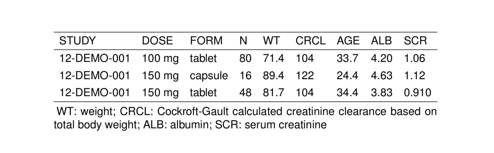

Users can read in a tex or yaml-formatted glossary file and use those abbreviations and definitions to form table footnotes. The goal is consistency across the project in how terms are defined.
9.1 Create a glossary object
Information from a glossary is stored in a glossary object. The object is a list that contains glossary entries. The glossary object may be created either by reading a glossary file or through a constructor function in R.
9.1.1 Read in a glossary file - TeX
Glossary files can be formatted as a collection of acronyms as you would normally have in a glossary.tex file. Something like this:
Acronyms in TeX glossary files have 3 parts:
- a label
- an abbreviation
- a definition
So the general format for an acronym is
In this example,
. [1] "\\newacronym[sort=CLF]{CLF}{CL/F}{apparent clearance after oral dosing}"CLFis the labelCL/Fis the abbreviationapparent clearance after oral dosingis the definition
We read in this glossary file with read_glossary()
. AAG : alpha-1-acid glycoprotein
. AIC : Akaike information criterion
. ALAG : oral absorption lag time
. ALB : albumin
. ALT : alanine aminotransferase
. AST : aspartate aminotransferaseWhen printing the object, you get the label and the abbreviation. To see the full entry, use $ to extract an entry
Here, we get the definition and the abbreviation printed to the console.
9.1.2 Read in a glossary file - Yaml
Users can also code their own glossary files in yaml format.
For this format,
- Put the label in the outer level (e.g.,
CLForV2F) - Put the abbreviation under
abb - Put the definition under
def
We can read the glossary file in yaml format again with read_glossary()
9.1.3 Create with R constructor
Use the as_glossary() function to create a glossary object in your R session
Alternatively, you can coerce a list
In this object, the label and the abbreviation are assumed to be the same.
To update the abbreviation,
9.2 Create table notes
Once the glossary object is created, you can form table notes using the glossary_notes() function.
Pass in the glossary object and the unquoted names you want to select out of the glossary
. [1] "WT: weight; CRCL: Cockroft-Gault calculated creatinine clearance based on total body weight; ALB: albumin; SCR: serum creatinine"This generates a ;-separated string with abbreviation: definition format for all the entries you selected. This can be added to a table as notes:
notes <- glossary_notes(glob, WT, ALB, SCR)
st_new(stdata()[1:3,]) %>%
st_notes(notes) %>%
stable() %>%
st_as_image()
9.2.1 Inline
Notes can also be attached to a table inline with st_notes_glo()

Notice in this example that the notes are longer than the longest line in the table and the formatting looks off. In this case, use the width argument to detach the notes into a minipage arrangement
9.3 Work with glossary objects
9.3.1 Update the abbreviation
9.3.2 Update the definition
There is no api to update the definition. This change should be made in the glossary file.
9.3.3 Select certain items in a glossary object
9.3.4 Combine two glossary objects
Use the c function
9.3.5 Get the glossary as a plain R list
9.3.6 Get the glossary object as a data frame
9.3.7 View the glossary object
You’ll have to coerce to data frame first
9.3.8 Extract one glossary entry
or
9.3.9 Extract multiple glossary entries
or